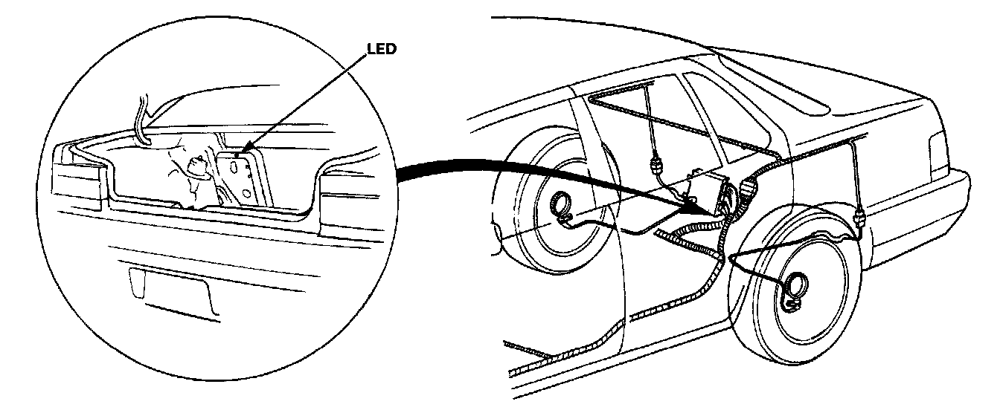
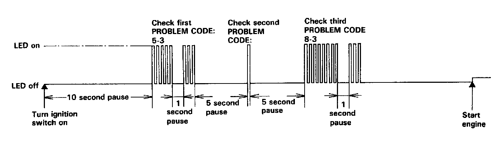

Reading and Clearing Diagnostic Trouble Codes
ANTI LOCK Warning LightComes on and remains on while running:
1. Stop the engine.
2. Turn the ignition switch on and make sure that the ANTI LOCK warning light comes on.
3. Restart the engine and check the ANTI LOCK warning light.
- There is no problem in the ALB system, if the ANTI LOCK warning light goes off.
- Go to step 4, if the ANTI LOCK warning light remains on.
4. Stop the engine.
5. Open the trunk lid.
6. Turn the ignition switch on, but do not start the engine.


7. Record the blinking frequency of the LED on the control unit. The blinking frequency indicates the problem code.
NOTE:
- The control unit can indicate three problem codes (one, two or three problems).
- If the LED does not light, see Troubleshooting of Warning Light Circuit. Initial Inspection and Diagnostic Overview
- If you miscount the blinking frequency, turn the ignition switch off, then turn on to blink the LED again.
- The LED lights faintly after starting the engine as the control unit uses the LED circuit to intercommunicate between its internal computers.
- After the repair is completed, disconnect the ALB 2 fuse for at least 3 seconds to erase the control unit's memory Then turn the ignition key on again and recheck.
- The memory is erased if the connector is disconnected from the control unit or the control unit is removed from the body.